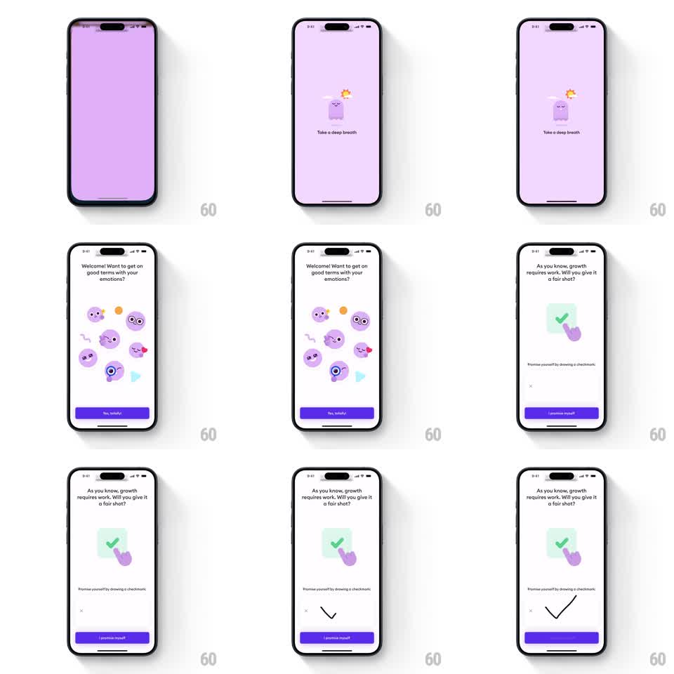

Media
Frame-by-frame

Rebuild this interaction 1:1: Ahead's splash-to-promise flow - a breathing mascot on a lavender splash, a welcome screen ringed by floating emotion faces, and a commitment screen where the user draws a checkmark on a canvas to unlock "I promise myself".

Rebuild this interaction 1:1: Ahead's splash-to-promise flow - a breathing mascot on a lavender splash, a welcome screen ringed by floating emotion faces, and a commitment screen where the user draws a checkmark on a canvas to unlock "I promise myself".
## Integration
Integration: stack-agnostic spec - springs given as stiffness/damping, timed motions as duration + curve; map every value to your framework and animation library of choice.
## Scene
Splash: solid lavender field, small blob mascot with a flower, "Take a deep breath" caption. Welcome: white screen, headline "Welcome! Want to get on good terms with your emotions?", a loose ring of floating emoji-style faces (calm, angry, sad, loved) with small shapes, purple "Yes, today!" button. Promise screen: headline "As you know, growth requires work. Will you give it a fair shot?", an illustration of a hand drawing a green check in a mint square, copy "Promise yourself by drawing a checkmark", an empty drawing canvas with a small X clear button, and the "I promise myself" button.
## Motion spec
Pattern: breathing splash, floating sticker ring, draw-to-commit canvas.
- Splash: the mascot breathes (scale 1.0 to 1.06, 2.2s sine) for one or two cycles, then the screen crossfades to welcome (300ms).
- The emotion faces float independently (translateY +-8px and rotation +-5deg sine loops, 2.5 to 4s, phase-offset) and drift into place with a stagger when the screen lands (scale 0.5 to 1.0 springs, 100ms apart).
- The canvas captures freehand strokes: the stroke renders as a dark rounded line (width ~6px) following the touch exactly, no smoothing lag.
- Check detection: when the drawn path matches a check shape (down-stroke then longer up-stroke), the button enables (gray to purple, 150ms) and the canvas illustration wiggles (rotation +-4deg, 300ms).
- The X clears the canvas with a 150ms stroke fade-out.
## Calibration
- The drawn stroke must feel like ink: instant, opaque, no trailing animation.
- Check detection should be generous - any down-then-up gesture counts; this is a ritual, not a test.
## Reduced motion
Splash crossfades immediately; faces render in place; drawing still works (it is input, not decoration) but the wiggle is dropped.
## Don't miss
- The button copy is first person ("I promise myself") - the drawing is the signature.
- The canvas sits below the illustration; the illustration is a hint, not the canvas itself.